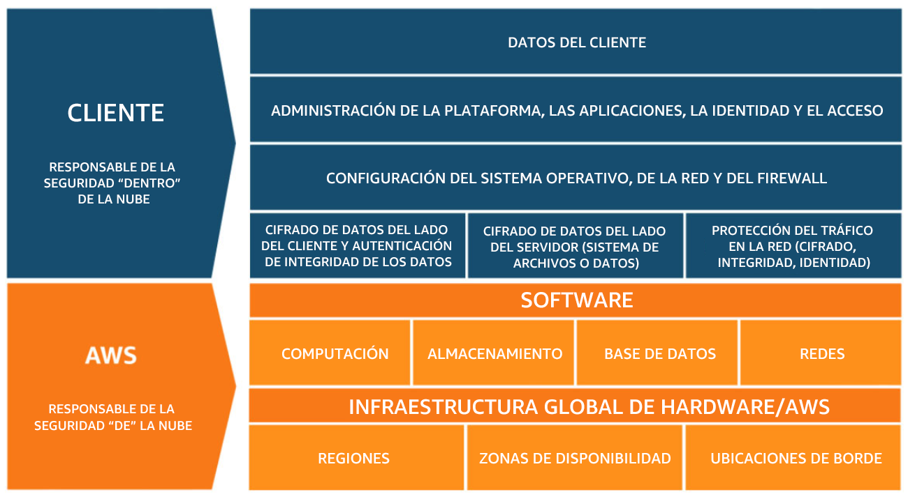
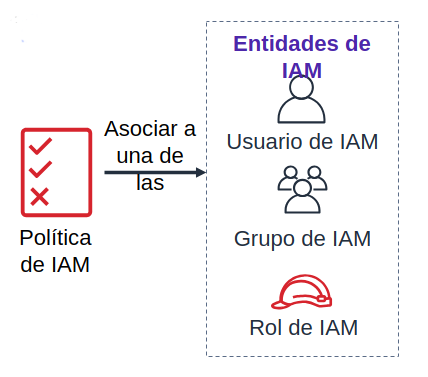

3. Seguridad en al nube de AWS
3.1. Modelo de responsabilidad compartida
El modelo de responsabilidad compartida de AWS es un concepto fundamental para comprender cómo se dividen las responsabilidades de seguridad entre AWS, cómo proveedor de servicios en la nube, y los clientes que utilizan esos servicios. Este modelo se aplica a fin de garantizar la seguridad de los datos y la infraestructura en la nube.
Responsabilidades de AWS:
AWS es responsable de la seguridad de la nube, lo que significa que se encarga de proteger la infraestructura física, los centros de datos, la red y los servicios fundamentales que ofrece. Las responsabilidades de AWS incluyen:
- Seguridad de la infraestructura: AWS debe proteger los centros de datos, servidores, redes y otros componentes físicos de su infraestructura global.
- Gestión de servicios compartidos: AWS es responsable de garantizar la seguridad de los servicios compartidos, como la gestión de identidad y acceso, y la administración de la red subyacente.
Responsabilidades del cliente:
Los clientes que utilizan los servicios de AWS tienen la responsabilidad de asegurarse de que sus aplicaciones y datos estén seguros dentro de la nube. Esto incluye:
- Seguridad de la aplicación: Los clientes deben asegurarse de que sus aplicaciones estén configuradas y protegidas adecuadamente, lo que incluye el manejo de credenciales, la seguridad de las aplicaciones y la configuración de cortafuegos.
- Gestión de datos: Los clientes son responsables de la seguridad de los datos que almacenan en la nube, lo que incluye la encriptación, la gestión de copias de seguridad y la gestión de acceso.
- Gestión de identidad y acceso: Los clientes deben administrar quién tiene acceso a sus recursos en la nube y cómo se otorgan los permisos.
El modelo de responsabilidad compartida se ilustra mejor de la siguiente manera:

3.2. Responsabilidad en materia de seguridad y características del servicio
3.2.1. Infraestructura cómo servicio (IaaS)
- El cliente tiene más flexibilidad en lo que respecta a la configuración de redes y almacenamiento.
- El cliente es responsable de administrar más aspectos de la seguridad.
- El cliente configura los controles de acceso.
Servicios administrados por el cliente:
- Amazon EC2
- Amazon Elastic Block Store (Amazon EBS)
- Amazon Virtual Private Cloud (Amazon VPC)
3.2.2. Plataforma cómo servicio (PaaS)
- El cliente no necesita administrar la infraestructura subyacente.
- AWS gestiona el sistema operativo, la implementación de parches a la base de datos, la configuración del firewall y la recuperación de desastres.
- El cliente puede centrarse en la administración de código o datos.
Servicios administrados por AWS:
- AWS Lambda
- Amazon Relational Database Service (Amazon RDS)
- AWS Elastic Beanstalk. Es un servicio que facilita la implementación y administración de aplicaciones web en la nube
3.2.3. Software cómo servicio (SaaS)
- El software está alojado de forma centralizada.
- Cuenta con licencia según un modelo de suscripción o de pago por uso.
- Normalmente, el acceso a los servicios se realiza a través de un navegador web, una aplicación móvil o una interfaz de programación de aplicaciones (API).
- Los clientes no necesitan administrar la infraestructura que respalda el servicio.
Ejemplos de SaaS:
- AWS Trusted Advisor. Es un servicio que proporciona recomendaciones personalizadas para optimizar tus recursos de AWS.
- AWS Shield. Ofrece protección contra ataques DDoS (Denegación de Servicio Distribuida) a tus aplicaciones y recursos en la nube de AWS
- Amazon Chime. Es un servicio de comunicación y colaboración en línea que incluye videoconferencias, llamadas de voz, chat y compartición de pantalla
Actividad
¿Quién es responsable? ¿AWS o el cliente?:
¿Actualizaciones y parches en el sistema operativo en la instancia EC2?
El usuario
¿Seguridad física del centro de datos?
AWS
¿Infraestructura de virtualización?
AWS
¿Configuración de grupos de seguridad de EC2?
El usuario
¿Configuración de las aplicaciones que se ejecutan en la instancia EC2?
El usuario
¿Actualizaciones o parches de Oracle si la instancia de Oracle se ejecuta como una instancia de Amazon RDS?
AWS
¿Actualizaciones o parches de Oracle si Oracle se ejecuta en una instancia EC2?
El usuario
¿Configuración de acceso al bucket de S3?
El usuario
¿Garantizar que la consola de administración de AWS no sea pirateada?
AWS
¿Configurar la subred?
El usuario
¿Configurar la VPC?
El usuario
¿Proteger frente a interrupciones de red en las regiones de AWS?
AWS
¿Proteger las claves SSH?
El usuario
¿Garantizar el aislamiento de red entre los datos de los clientes de AWS?
AWS
¿Garantizar una conexión de red de baja latencia entre el servidor web y el bucket de S3?
AWS
¿Requerir la autenticación multifactor para todos los inicios de sesión de los usuarios?
El usuario
3.3. AWS Identity and Access Management (IAM)
AWS Identity and Access Management (IAM) es un servicio que te permite controlar el acceso a los recursos y servicios de AWS de forma segura.
IAM permite administrar identidades, cómo usuarios y roles, y asignar permisos para que los usuarios y aplicaciones puedan acceder y realizar acciones en los recursos de AWS.
IAM es fundamental para garantizar la seguridad y el cumplimiento en tu entorno de AWS.
3.2. Conceptos Clave de IAM
-
Usuarios IAM: Representan individuos o aplicaciones que necesitan acceso a recursos de AWS. Cada usuario tiene credenciales únicas y se le asignan permisos específicos.
-
Grupos IAM: Los grupos son conjuntos lógicos de usuarios. Puedes asignar permisos a un grupo en lugar de asignarlos individualmente a cada usuario. Esto facilita la gestión de permisos.
-
Roles IAM: Los roles son identidades temporales que pueden asumir usuarios, servicios o recursos en AWS. Los roles son útiles para aplicaciones que se ejecutan en instancias EC2, servicios de Lambda y más.
-
Políticas IAM: Las políticas son documentos que definen los permisos y las acciones permitidas o denegadas en recursos de AWS. Puedes adjuntar políticas a usuarios, grupos y roles.

3.4. Autentificación de usuario de IAM
El usuario de IAM tiene dos tipos de acceso:
Acceso mediante programación.
- Se autentica con lo siguiente:
- ID de clave de acceso
- Clave de acceso secreta
- Proporciona acceso a la CLI de AWS y al SDK de AWS.
Acceso a la consola de administración de AWS
- Se autentica con lo siguiente:
- ID de cuenta o alias de 12 dígitos
- Nombre de usuario de IAM
- Contraseña de IAM
3.5. Recomendaciones de Seguridad
- Principio de Menor Privilegio: Asigna permisos mínimos necesarios para realizar una tarea.
- Rotación de Credenciales: Cambia las contraseñas y las claves de acceso periódicamente.
- Auditoría: Habilita el registro de auditoría en IAM para supervisar eventos y actividades.
3.6. Ayuda y Documentación
La Consola de IAM proporciona una amplia documentación y ayuda en línea. Además, puedes consultar la documentación oficial de AWS IAM para obtener información detallada sobre políticas, roles y prácticas recomendadas.